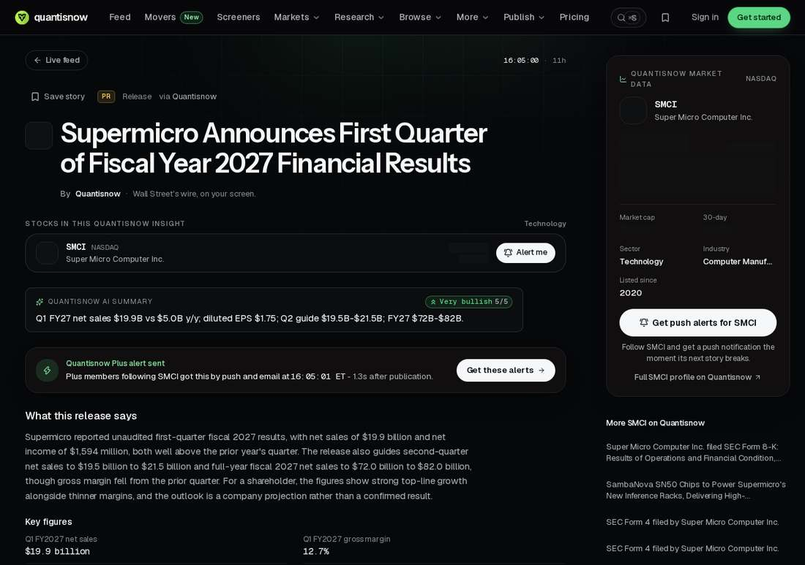

Supermicro Quarterly Revenue Nears $20 Billion: Up Nearly Fourfold, Full-Year Guidance Raised to Start at $72 Billion
Supermicro's first-quarter net sales were $19.95 billion, roughly four times a year earlier and above the LSEG-compiled market expectation of $16.39 billion. Adjusted EPS of $1.81 beat the expected $1.23. Second-quarter guidance of $19.5–21.5 billion and full-year guidance of $72–82 billion both exceed prior expectations and previous guidance.

- 01THE ANNOUNCEMENT — Supermicro released fiscal 2027 first-quarter results after the close on November 3, 2026: net sales of $19.95 billion and net income of $1.594 billion.
- 02THE CONFIRMATION — Reuters confirmed the same day that revenue and adjusted EPS both beat LSEG expectations, and the shares rose about 6% after hours.
- 03THE WATCHPOINT — Delivery on second-quarter guidance of $19.5–21.5 billion, whether gross margin holds at 12.7%, and when operating cash flow turns positive.
WHAT HAPPENEDWhat Happened
Supermicro's fiscal 2027 first-quarter results, released after the close on November 3, 2026, put net sales for the quarter ended September 30, 2026 at $19.95 billion, up from $11.1 billion in the prior quarter and $5.0 billion a year earlier. GAAP net income was $1.594 billion, with diluted EPS of $1.75.
Reuters confirmed the same day that revenue beat the LSEG-compiled consensus of $16.39 billion, adjusted EPS of $1.81 beat the expected $1.23, and gross margin of 12.7% came in above the 12.0%–12.5% range pre-announced in October.
Guidance was raised in step: second-quarter net sales are expected at $19.5–21.5 billion, above the LSEG consensus of $17.14 billion, and full-year net sales at $72–82 billion, above both the previous guidance of $65–72 billion and the market expectation of $69.17 billion.
Reuters reported that the shares rose about 6% after hours following the release, and noted the context of scrutiny: the company last month appointed former Western Digital executive Mark Long as chief financial officer, and a contractor last month admitted to illegally exporting servers containing advanced NVIDIA chips to China.
WHY IT MATTERSHalf of the fourfold growth story is an expectations-basis story
$19.95 billion against $5.0 billion — quarterly revenue up nearly fourfold in a year — shows by itself that AI server shipments have entered a different order of magnitude. The sequential jump from $11.1 billion last quarter to $19.95 billion this quarter is likewise anything but gradual growth.
But the size of the beat needs discounting: on October 20 the company had already pre-announced first-quarter revenue of $18.5–19.5 billion, so the final $19.95 billion only exceeded the top of its own range by about $450 million. The market-consensus basis had not fully caught up with that pre-announcement, making the headline beat larger than the operational outperformance.
WHY IT MATTERSGuidance deserves more attention than the quarter's numbers
The floor of full-year guidance, $72 billion, is exactly the ceiling of the old guidance — management has lifted its worst case straight to the previous best case. The second-quarter guidance midpoint of $20.5 billion implies roughly $40 billion for the first half; working back from the full-year midpoint of $77 billion leaves about $37 billion for the second half, so the cadence does not assume the current pace continues all year.
The other side is cash: operating cash flow was negative $434 million in the quarter, so expansion is consuming cash. A 12.7% gross margin, while above the pre-announced range, remains thin within the server contract-manufacturing chain, and any compliance or supply disruption eats directly into profit.
SIGNAL JUDGMENT — ANALYSISThe signal is the raised guidance, not a single quarter at fourfold
Tokenta Signal's judgment: the signal in Supermicro's results is not the $19.95 billion itself, but the floor of full-year guidance landing directly on the old ceiling. The single-quarter figure was underpinned by October's pre-announcement, limiting the surprise. Management's willingness to raise the full-year worst case shows order-book visibility genuinely extends into the second half, rather than resting on one quarter's shipment pulse.
WHAT REMAINS UNCERTAINWhat Remains Uncertain
EVIDENCEEvidence

Confirmed by two sources: Supermicro's official earnings release and Reuters' same-day report. Original links opened and verified.
PRIMARY SOURCESPrimary Sources
- Reuters same-day report
https://www.reuters.com/business/super-micro-forecasts-quarterly-revenue-above-estimates-strong-ai-server-demand-2026-11-03/ - Supermicro official earnings release (full text via Quantisnow)
https://www.quantisnow.com/insight/supermicro-announces-first-quarter-of-fiscal-year-2027-financial-results-6769523
RELATEDRelated Intelligence
- Coherent Q1 FY27: Revenue Up 50% to $2.37B as AI Optics Hit 82% of Sales
- Meta Prices Its Debut Euro Bond at 9 Billion Euros, Closing the Record 53 Billion Euro Book (Update to Flashes 193 and 202)
- Meta Buys Conductor, the App That Runs a Team of Coding Agents at Once, and Shuts Its Cloud Down on November 20
- Snap Swings to a $56M Q3 Profit as Revenue Misses by $8M